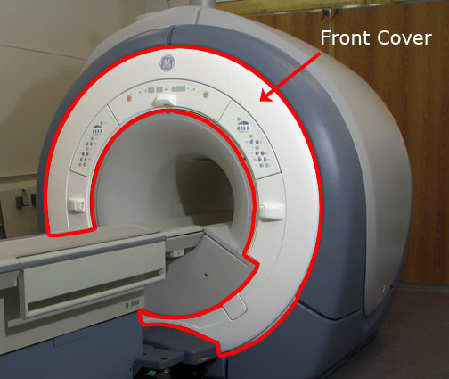
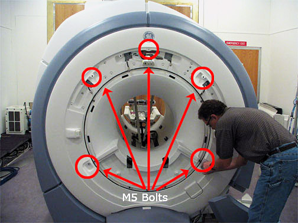
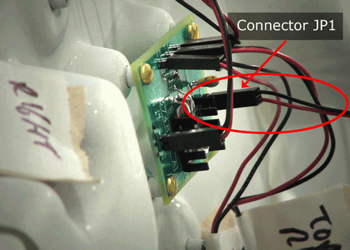
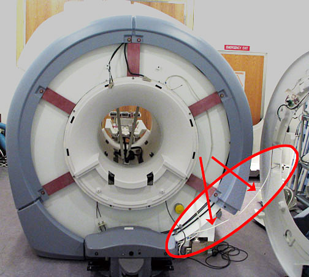

Operating Documentation
Direction 5440001-3, Rev# 6
Signa HDxt Service Methods
Module Version 1.0, Version Date 4/26/07
Operating Documentation |
| Required Persons | Preliminary Reqs | Procedure | Finalization |
|---|---|---|---|
| 1 | Not Applicable | 15 (see Procedure Overview for details) | Not Applicable |
Removal of the Front Cover typically takes less than 15 minutes if the front end of the split bridge has already been removed (see Step 4). If this step has not been performed you should plan on at least 90 minutes to remove and replace the Front Cover.
| Item | Qty | Effectivity | Part# | Manufacturer | |
|---|---|---|---|---|---|
| Non ferrous M5 Allen wrench | 1 | - | - | - | |
| ||||
| Strong Magnetic Field! | ||||
| Ferrous materials can become dangerous projectiles in the presence of the magnetic field Produced by the Signa Magnet. | ||||
| Do not Bring any ferromagnetic tools or equipment into the magnet room. |
Follow all Lock Out and Tag Out procedures by turning off the applicable breaker in the PDU (see LOCKOUT TAGOUT Procedure and Checklist).
| NOTE: | The Front Cover and the Front End Bell can be removed independently of each other. |
Illustration 1: Front Cosmetic Cover

Undock patient table, and position table away from the magnet.
Remove Front Trim Ring by pulling it away from the enclosure. There are no bolts holding it into place (see Illustration 2).
Illustration 2: Remove Trim Ring

Remove the front portion of the split bridge (see Bridge Removal)
Remove Control Panels (see Replacing Control Panels).
Using an M5 Allen wrench, remove the five (5) bolts which attach the Front Cover to the turtle bracket (see Illustration 3).
Illustration 3: Unbolting the Front Cover

Once the five (5) bolts have been removed pull the Front Cover slightly away from the magnet and identify the Conquest Voltage Regular Board on the upper right side. Carefully remove JP1 from the board.
Illustration 4: Voltage Conquest Board on back of Front Cover

Remove the Front Cover; ensure the microphone cable connected to the lower right side of the cover is not pulled (see Illustration 5).
Illustration 5: Microphone Cord Attached to Cover

To free the Front Cover from the microphone cord, you can either disconnect it from the rear pedestal (connector J9 on the Remote Intercom Board), or detach it from the Front Cover by following Replacing Microphone.
Reverse the steps to install replacement Front Cover.
No finalization steps.